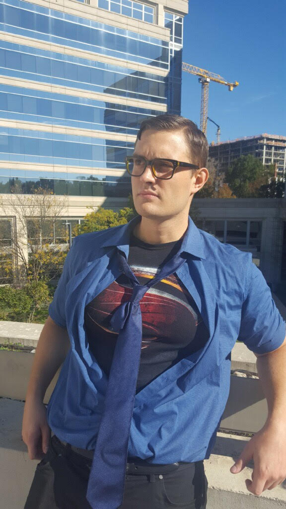

What's there to say? I'm just your everyday friendly neighborhood twenty-something web-developer... Well, aspiring web-developer.
I didn't always dream of working with code. In fact, it was a very recent realization for me. Just under a year ago, I graduated from Georgetown
University here in Washington D.C. with a degree in English Literature. Right now, I work in sales at Oracle, which is an amazing company.
I was truly lucky with my first job out of school. Growing up, I wanted to be Spider-Man.
It took twenty-five years to realize that I don't look good in the tights, and the rest is history. I dropped web-slinging for web-development.
I am passionate, some would say "obsessed", with comic books. In this, the golden age of superhero cinema (I'm also a film and TV fanatic), my girlfirend
likes to say that my life is peaking. I can't argue against it. I have a good job, my health, the love of a beautiful woman far more intelligent than myself,
and 4-5 superhero flicks a year. All in all, I'm a very lucky guy. I'm not, however, doing something that I love doing. That's the reson why I'm here.
My life is peaches right now. But by growing complacent, it can only grow worse. I'm grateful to George Washington University for helping me make my
professional life every bit as meaningful as the rest of my life. I'm grateful for something to look forward to again.